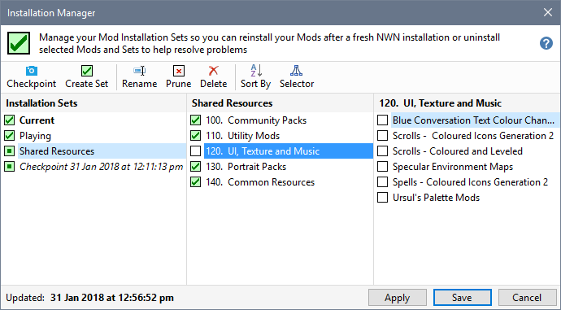
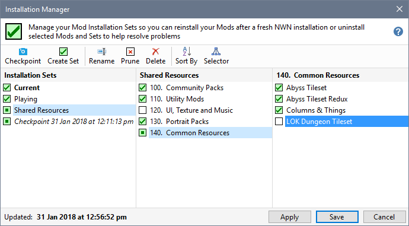
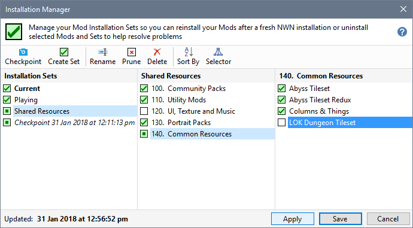
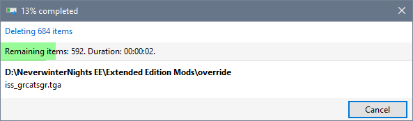

Using the Installation Manager to uninstall Mods you think may be causing problems with the Mod you are playing makes it easy to reinstall them after your problem has been solved.
- Clear the tick (uncheck) from the Groups containing the Mods you want to uninstall.

- Clear the tick from specific Mods you want to uninstall.

- Click Apply when you have finished specifying which Mods you want to uninstall.

- You may see a dialogue showing the delete files progress after which, the Installation Manager is closed.

Changes to the Mod install state is reflected in all Installation Sets that containing same Mod.
Related Topics
Rename Installation Sets
Add or Remove Groups
Prune Installation Sets
Delete Installation Sets
Uninstall Installation Set defined Mods
Install Installation Set defined Mods